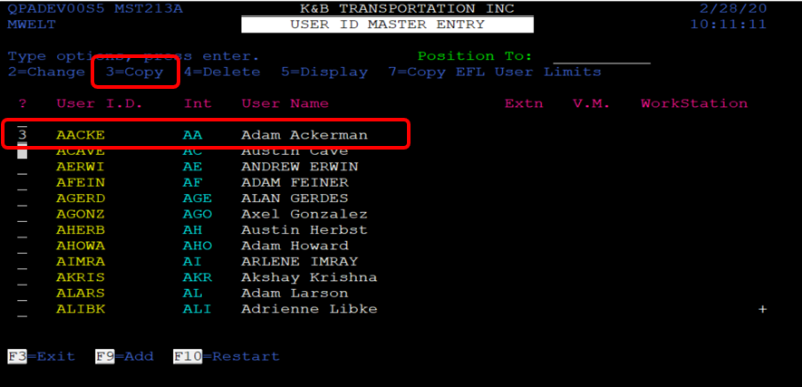
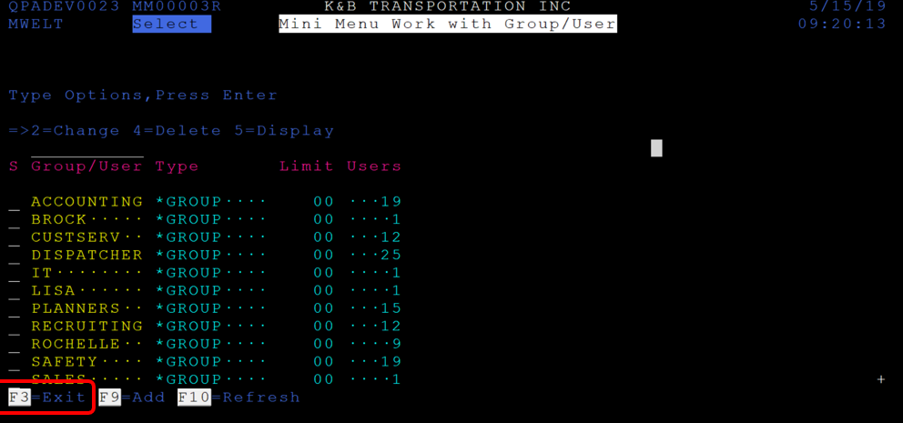

Step-by-Step Guide for the New-user
1) Open as400.
2) Log in with your credentials (user = 1st letter of your first name and 1st 4 letters of your last name) (your password).
3) Select "1"-> K&B transportation.
 4) Select "3" -> K&B Custom Menu.
5) Select "18" IT Operations Menu.
4) Select "3" -> K&B Custom Menu.
5) Select "18" IT Operations Menu.
 6) Select "3" New Hire Set Up Menu.
6) Select "3" New Hire Set Up Menu.
 7)Select "1" User Profile.
7)Select "1" User Profile.
 8) Write "ALL".
8) Write "ALL".
 9) Page down to find the specific user to copy IBM | profile from.
9) Page down to find the specific user to copy IBM | profile from.
 10)Select "3 next to User Profile to copy and press Enter key.
10)Select "3 next to User Profile to copy and press Enter key.
 11) Enter the name of the new user profile (first character of first name, first four characters of last name).
Enter first and last name with quotes in "Text description" field.
11) Enter the name of the new user profile (first character of first name, first four characters of last name).
Enter first and last name with quotes in "Text description" field.
 12) Press Enter key to create new IBM (AS400) profile.
After pressing the Enter key, the system returns to the Work with User Profiles screen.
Enter 2 in the Opt field next to the User Profile. Press Enter key.
13) Press F10. Page down (five times) to verify information matches that of the copied User Profile.
12) Press Enter key to create new IBM (AS400) profile.
After pressing the Enter key, the system returns to the Work with User Profiles screen.
Enter 2 in the Opt field next to the User Profile. Press Enter key.
13) Press F10. Page down (five times) to verify information matches that of the copied User Profile.
 14) Verify Message Queue shows the username.
Verify Library shows QUSRSYS. Page down.
14) Verify Message Queue shows the username.
Verify Library shows QUSRSYS. Page down.
 16) No changes. Page down.
17) No changes. Press Enter key.
16) No changes. Page down.
17) No changes. Press Enter key.
 19) Returned to the Work with User Profiles screen
19) Returned to the Work with User Profiles screen
 Next step are the instructions tu create Innovative User Profile, click the button below to show the steps
Next step are the instructions tu create Innovative User Profile, click the button below to show the steps
1) From the supervisor requesting the setup, ask for employee to copy Sessions (Innovative) profile from. Copy method is easier and faster.
Menu Path: 1(K&B Transportation Inc) 3 (K&B Custom Menu) 18 (IT Operations)
Choose option 3 (New Hire Set Up Menu).
2) Choose Option 2 (User ID and Initials).
3) Using the supervisor (Schrunk or Fengler) recommendation of employee profile to copy from.
Example: If new employee is replacing Adam Ackerman (AACKE), select AACKE Innovative User Profile to copy. In this example, AACKE Innovative Profile will be copied to create MTIMP
Choose 3 to copy the Innovative User Profile and press Enter key.

4) Enter username of new employee in User I.D. field and press Enter key.
Name should automatically fill in.
Enter new employee initials. Initials are required and must be unique.
Press F5 to Update.
5) Bill Authorization (F9) screen appears.
Enter information in below screen. Should look at follows.
Choose F5 for Update
6) Choose Shift F12 (F24) for More.
Choose Shift F2 (F14) for Fuel Authorization.
7) Enter Y in Card Number.
Enter Y in Purchase Limits.
Enter Y in Cash Limits.
Enter Y in Advance Issue. F5 to Update
8) F3 to Exit
9) Choose Option 3 (Mini Menu Setup).
10) Select Group (Dispatchers) and enter 2 and press Enter key to Change (add user to group).
11) Page down to end of list and enter username of new employee.
Press F5 to Update.
12) Press F3 to Exit the following screen.

After you did the first steps, now you have to do the setup according to your department:
Once you finish the set up according your deparment go ahead and complete steps 8 to 10
1) Option 8 (Aplication User)
2) F6 to Create
3) Enter User (username).
Enter U (for user) in the Level field. Or Enter G in the Level field to create a Group.
Enter full name of user in the Name field.
Enter K & B Email address of name@kbtransportation.com
Press Enter key to create.
Message, “The text for the user profile is ‘Firstname Lastname’.”
Press Enter key to create user.
Press Enter key again to Exit.
4) Press F3 to Exit.
5)Options 9 and 10 work together and only used when requested by the user and approved by IT Department or the user’s supervisor.
Options 9 and 10 are used for security to backdoor menu options created by Rod Carlson.
Below is a screen shot of the Application Menu created by Rod Carlson.
6) Choose Option 9 (Application X-Ref).
 7) F6 to Create. (As of May 21, 2019, not all employees are in a group).
8) Enter Group name. Choose appropriate Group for new employee. (e.g. ACCT, ADMIN, DISPATCH, etc.)
Enter username in User field.
Enter Status. (A for new employees.)
If necessary (probably not), change From Date and To Date.
Press Enter key to create.
9) F3 to Exit.
10) Chose Option 10 (Application Program). Created by Rod Carlson.
Option 10 is NOT needed for setup with every new user and works with Option 9.
New user is ready to logon.
7) F6 to Create. (As of May 21, 2019, not all employees are in a group).
8) Enter Group name. Choose appropriate Group for new employee. (e.g. ACCT, ADMIN, DISPATCH, etc.)
Enter username in User field.
Enter Status. (A for new employees.)
If necessary (probably not), change From Date and To Date.
Press Enter key to create.
9) F3 to Exit.
10) Chose Option 10 (Application Program). Created by Rod Carlson.
Option 10 is NOT needed for setup with every new user and works with Option 9.
New user is ready to logon.